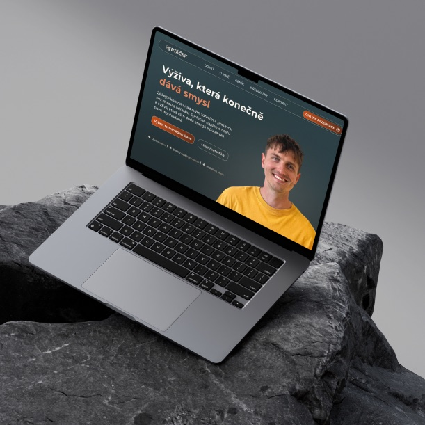
REDESIGN VÝŽIVOVÉHO PORADENSTVÍ PTÁČEK
Od hobby webu k digitální autoritě
Úvod
Všechno začalo dohodou na kompletním redesignu Robinových stávajících stránek. Robinův profesní růst natolik předehnal jeho původní web, že stávající prezentace začala jeho podnikání spíše brzdit. Naším cílem bylo vytvořit digitální identitu, která bude odpovídat expertovi 21. století.
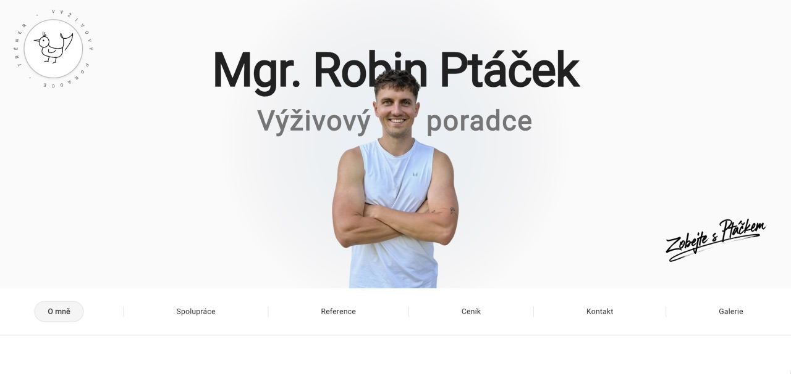
Fáze 1 – Objevování a strategie
Celý proces odstartovala hloubková konzultace, během které jsme definovali obchodní cíle, misi a především Robinova ideálního klienta. Zjistili jsme, že jím není profesionální sportovec, ale vytížený člověk hledající řád a energii. Tato strategická fáze byla klíčová, protože nám umožnila zcela opustit agresivní fitness klišé a postavit celou budoucí komunikaci na klidu, srozumitelnosti a vědecké racionalitě.
Fáze 2 – Dospělá vizuální identita
S jasnou strategií v zádech jsme jako první krok vytvořili kompletní vizuální identitu a brand manuál, který se záměrně distancuje od oborových stereotypů. Naším cílem bylo vyhnout se „bio“ zelené barvě a motivům listů či salátů. Navrhli jsme moderní, minimalistické logo, kde ikonický symbol ptáčka plynule přechází do tvaru vidličky, čímž vznikl svébytný symbol moderní výživy.
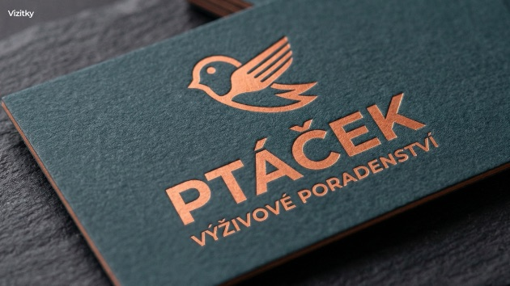
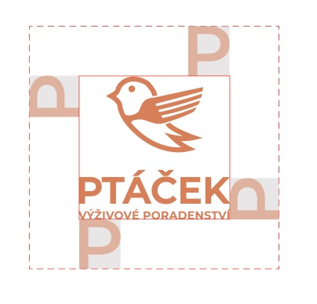
Pro značku jsme definovali zemitou paletu postavenou na Temné břidlici a Mandlové, které evokují stabilitu a lidskost. Dynamiku a odkaz na sport jsme do manuálu vložili skrze akcenty Pálené mědi a Terakoty. Celý vizuální systém jsme ukotvili v sebevědomé typografii Montserrat a Inter. Tento radikální odklon od klišé okamžitě oddělil Robina od masy amatérských poradců a definoval ho jako dospělého a důvěryhodného partnera ještě předtím, než padl první pixel webu.
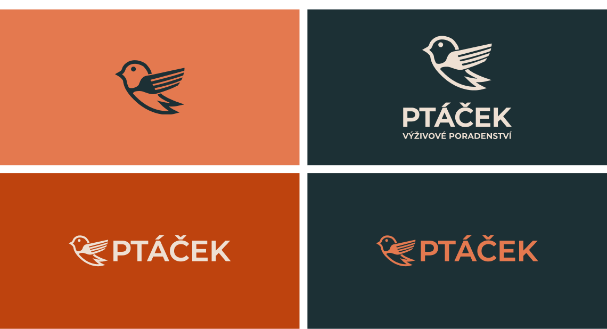
Fáze 3 – Logika designu
Než začnu řešit vizuál, musím mít postavenou funkční kostru. Nejdřív jsem vytvořil informační architekturu, abychom dali všem textům a službám jasný řád. Tuto „mapu“ jsem následně načrtl na papír do prvních wireframů a ty pak převedl do interaktivního low-fidelity prototypu v Google Stitch. Díky tomu jsme si mohli hned na začátku otestovat celou uživatelskou cestu a ujistit se, že rezervace konzultace je na webu maximálně intuitivní.
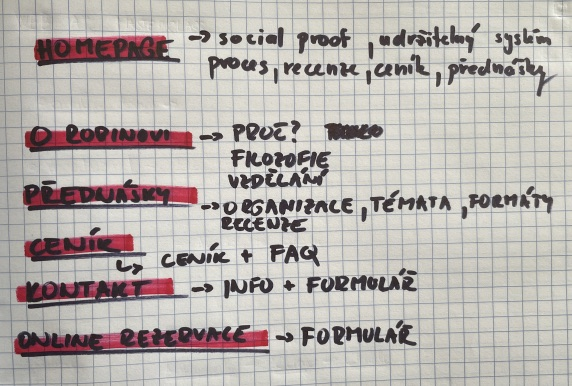
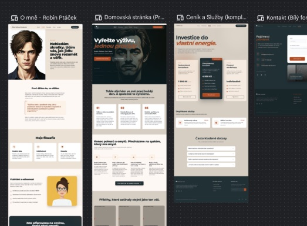
Při návrhu obsahu webu jsme následně aplikovali brandovou identitu na unikátní storytelling, který propojuje tři Robinovy světy: exaktní vědu, vrcholový sport a hlubokou empatii. Do centra webové prezentace jsme umístili Robinův osobní příběh boje s váhou během pandemie. Tato volba nebyla náhodná – odhalená frustrace zbourala bariéru „nedostupného poradce“, zatímco následná cesta zpět podložená vzděláním, certifikáty a praxí vybudovala nezpochybnitelnou autoritu. Z poradenství se tak na webu stalo skutečné partnerství.
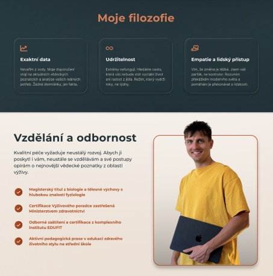
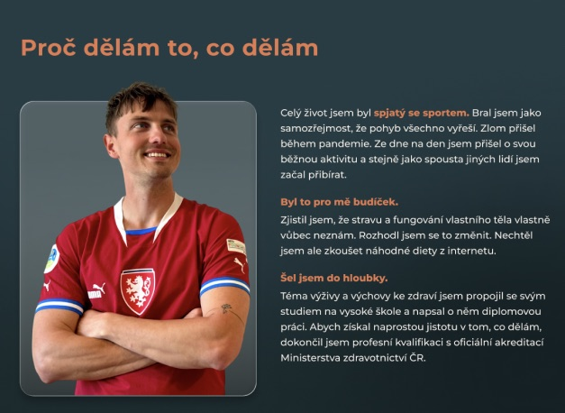
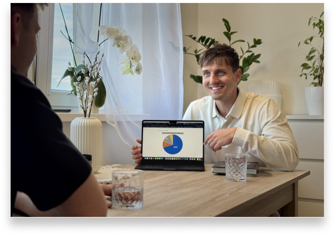
Skvělý design by nefungoval bez kvalitních podkladů. Zorganizovali jsme proto zcela nové focení, aby vizuál konečně ladil s novou, dospělejší tváří značky. Snímky jsem pak upravil a detailně ořezal tak, aby perfektně zapadly do tmavého rozhraní webu. S novými fotografiemi šel návrh webu hladce. Cílem však nebylo vytvořit pouze pěknou vizitku, ale funkční nástroj, který vysvětluje, buduje autoritu a prodává.
Navádění k akci (CTA):
Celý web je postavený na promyšlené uživatelské cestě. Strategicky rozmístěná a jasná CTA tlačítka uživatele nenechávají tápat, ale logicky ho vedou k jedinému cíli: sjednání konzultace.
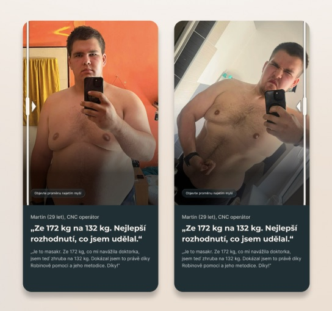
Social Proof jako hlavní pilíř:
Výživa je nesmírně citlivé téma, kde rozhoduje důvěra. Službu jsme proto detailně vysvětlili a podpořili reálnými důkazy. Navrhl jsem výrazné sekce s autentickými recenzemi a vizuálně čisté karty s transformacemi klientů. Z pohledu UX pro mě bylo klíčové doladit jejich responzivitu a interakci – na desktopu se dodatečné informace zobrazují plynule pomocí hover efektu (po přejetí myší), zatímco na mobilu a tabletu jsem karty přetvořil do intuitivního slideru přizpůsobeného pro swipování.
Bento design pro přednášky:
Robin se nevěnuje jen 1-on-1 poradenství, ale i přednáškám. Tuto sekci jsem zpracoval do moderního bento gridu. Nabízí rychlý, vizuálně atraktivní přehled jeho aktivit, který je pro okamžité zvýšení kredibility podpořený logy organizací, se kterými již spolupracoval.
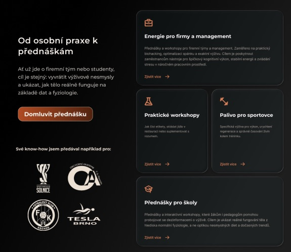
Fáze 4 – Ostrý vizuál
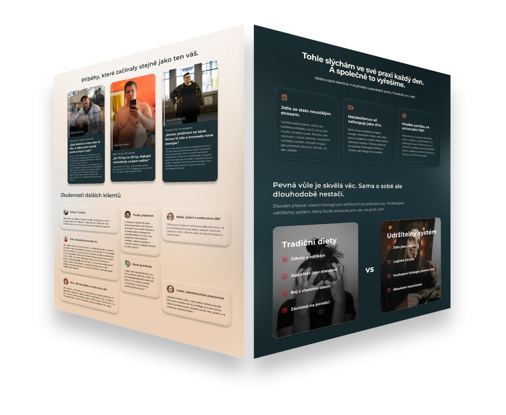
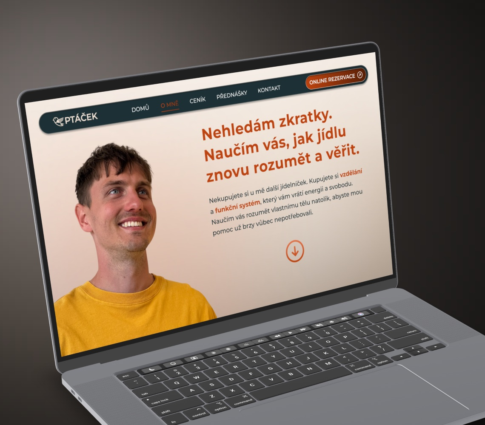
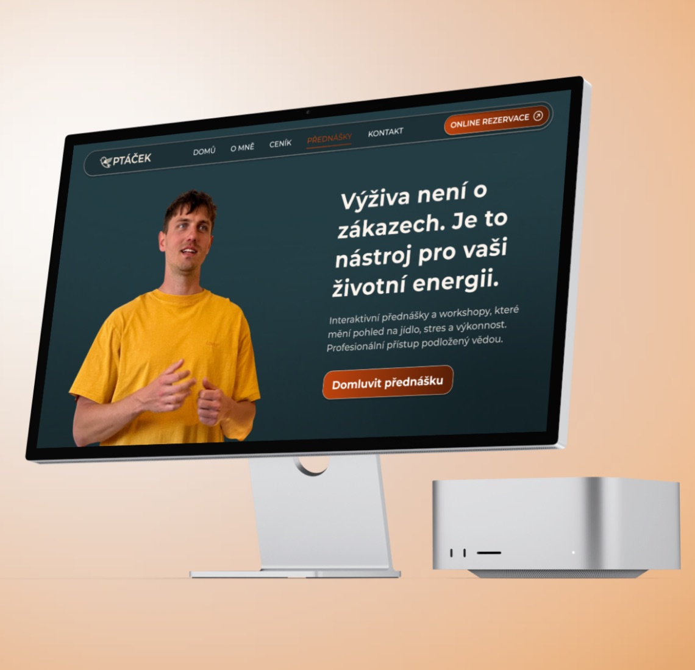
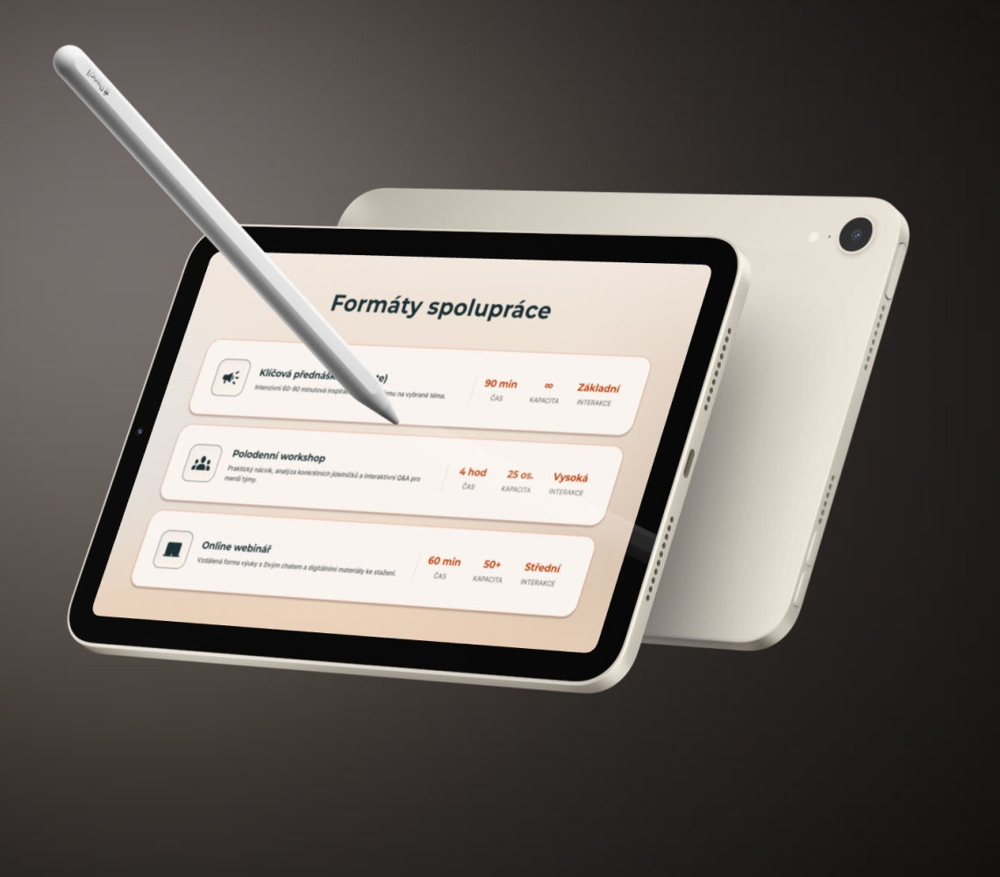
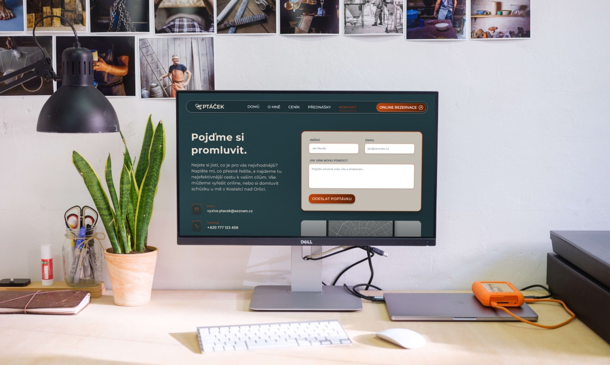
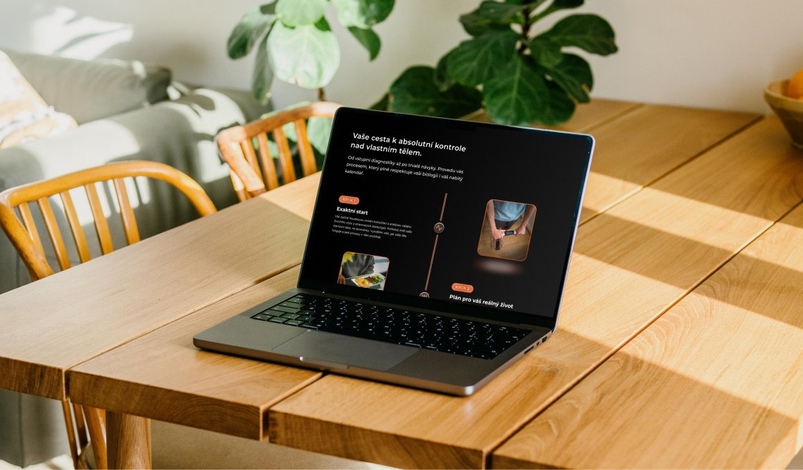
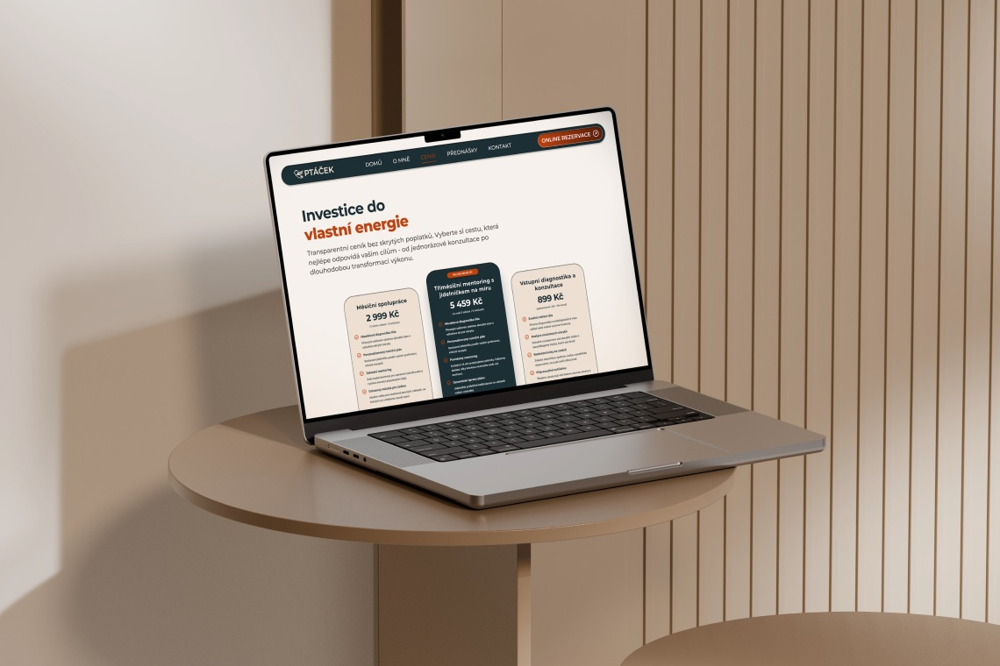
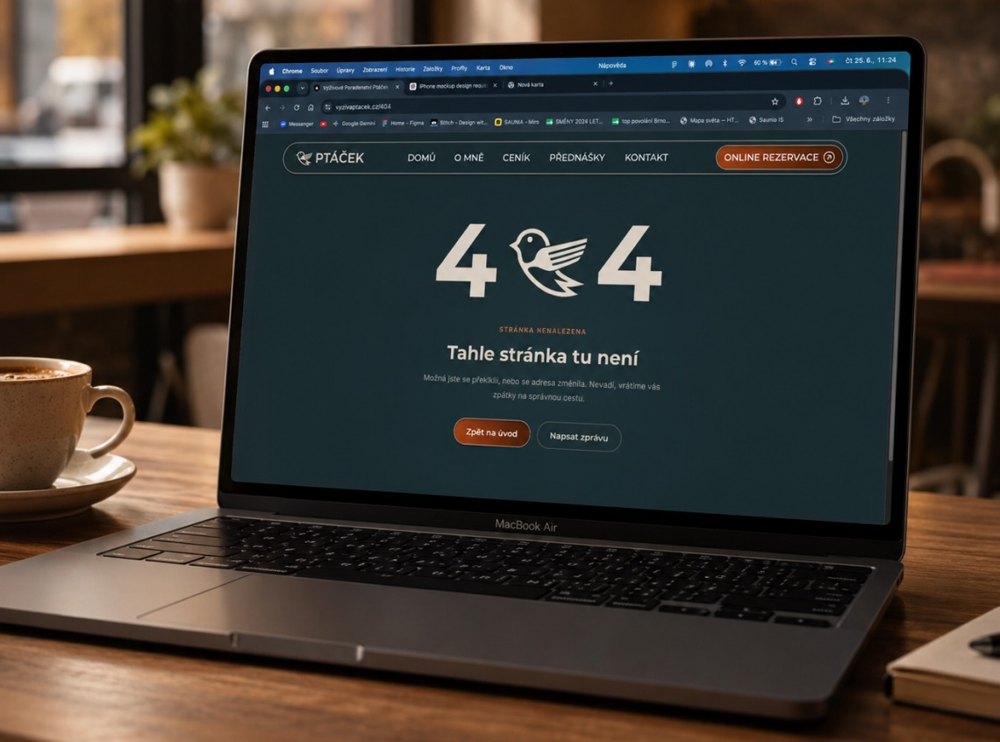
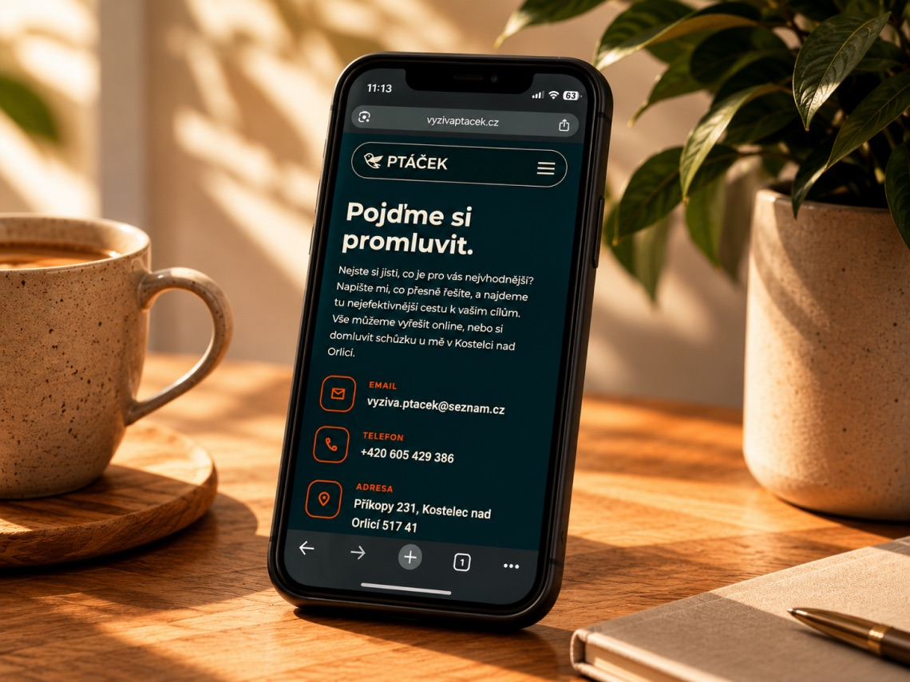
PŮVODNÍ WEB
- žádná jednotná vizuální identita
- generické obrázky
- uživatel neví jak služba probíhá, co má od Robina čekat
- aby se uživatel objednal, musí vyplnit dotazník
- generické reference, bez autentičnosti a storytellingu
- plochý vizuál
- velmi málo informací o Robinovi
NOVÝ REDESIGN
- jednotná moderní vizuální identita
- reálné fotky podporující storytelling
- detailní popis Robinovy služby
- propojený rezervační systém
- skutečné příběhy proměn Robinových klientů
- moderní vizuál s jasnou hierarchií
- detailní popis Robinova příběhu a zkušeností